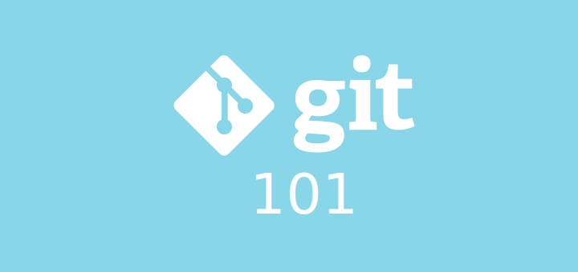

Source control is a fundamental part of any software project. In fact, it can be used to facilitate versioned development of any works stored in digital media.
In the following sections I will give a high level overview of source control options, explain in great detail how to use git, and provide information to help you build your workflow.
By the end of this article you should be equipped with more then enough information to effectively version your projects with git.
Source Control Options
If you already know about source control and what options are available you can skip to Using Git below.
There are actually a number of solutions employed for storing versioned data. The simplest source control option is no source control at all. This is really a poor choice for obvious reasons:
- If files are deleted or corrupt data may be lost.
- No history of changes to fall back on if a problem is introduced later.
- Managing copies of data is complicated with manually tracking versions of files.
For all of these reasons and more there exists software to keep track of file revisions, as of this writing the three most popular are:
- Git - Open source distributed source control.
- Subversion (aka SVN) - Open source centralized source control.
- Perforce (sometimes reffered to as P4) - Commercial centralized source control.
There are others, but at this point they are mostly relics, not well known, or for niche markets. I will only go over the last two here as we will cover git in greater detail below.
Subversion
SVN is a popular derivative of the legacy Concurrent Versions System (CVS), both of which I have used in previous projects. SVN was a welcome improvement and dominated the open source versioning system usage prior to the advent of git.
SVN is mostly used via a command-line interface (CLI), but there are several clients available. My favorite client for Windows is the open source TortoiseSVN, but I have used the freemium SmartSVN on other platforms.
SVN is a centralized source control system which we will discuss more in Centralized vs distributed below.
I still find myself advocating the use of SVN for some situations in which git traditionally has trouble, including centralizing authority of binary assets and storing large files that require version control. It is worth noting that git has recently introduced Large File Storage which may reduce or eliminate the need for SVN in these situations.
SVN repositories are common enough that git provides a mechanism called git-svn which allows you to use git as a client to connect to an SVN server. More information can be found on the free git book.
Perforce
P4 is more of a corporate thing. It started off fairly expensive, as many commercial products tend to do, but since the wide-spread adoption of git the company behind it started to market to smaller teams with offers such as:
“All Perforce products are free for 20 users, forever… Including tech support. Really!“
A pretty compelling offer really, especially when you consider the power of the platform. I have used P4 at several previous employers, and was very impressed with it overall. I have, however, never felt the need to use it on my own personal projects, especially when git is a free open source alternative.
If you have the money it could be a wise investment, however, I personally would keep a watchful eye out for Vendor lock-in.
Centralized vs distributed
So now we get to discuss the difference between centralized and distributed source control systems and look at the pros and cons of each. We will mostly be focusing on these concepts from a high level and will ignore any application specific workarounds.
The primary difference between centralized and distributed versioning systems is the location of the repository. In centralized systems the repository is held on the server while the distributed approach duplicates the repository for each client. In fact with the distributed approach there isn’t really an authoritative server at all.
There are logical trade-offs to either approach.
Distributed clients typically require more storage then centralized systems that can compute files from diffs on the server.
Distributed systems lack a central authority to handle things like file permissions and locking. This can make it difficult to work with binary data as it normally doesn’t make much sense to merge changes to these files.
Distributed systems have a somewhat built in redundancy, unlike central systems which have a single point of failure. If the central server is down it often puts collaboration at a stand still, but since distributed systems do not require a central server you can just add another remote and collaborate directly with any peer.
Distributed systems offer much more flexibility when choosing a workflow. Many open source projects have a fairly distributed workflow allowing anyone to fork the project and work in isolation until some point in the future they create a pull request to merge into the main project. Most corporate environments instead create a more centralized workflow by designating a main repository that developers branch from directly.
Speaking of redundancy it is worth noting that neither approach by itself is bulletproof in this regard. Since data integrity is likely important to you, as it must be or you probably wouldn’t be using source control in the first place, you may also want to consider reducing the effects of data degradation.
Rather then being tempted to store repositories on commodity hardware you could be sure your data is safer with some sort of RAID setup for redundancy. I am unsure of the exact hardware setup for GitHub and Bitbucket, but I haven’t heard many complaints yet, however, if you store your repositories on your own setup it may be worth investing in server grade hardware.
I will probably write another post at some point on NAS storage, but for now I will say that I have been pretty happy with FreeNAS using the ZFS file system. I do, however, plan on upgrading my NAS setup in the future to include server grade hardware with support for ECC Memory, as my current system does not. For those that are interested in this sort of thing, you can read more information on ZFS with ECC RAM.
Using Git
We are now ready to talk about git and how to effectively use it to manage your projects. I will be covering all you need to know for getting up and running, but there is always more you can learn and much of it is freely available. The git documentation site, for example, has videos, reference materials, and a free ebook worth looking over.
There are two main ways to use git each with their own trade-offs. You can choose to use one of the many GUIs available for a graphical approach, or you can go all out and use the CLI. I will be focusing mostly on the CLI as the GUIs are just wrappers around it. It is important to grasp the concepts here as it can help you fix situations where the GUI does something you didn’t expect. We will also explore a hybrid approach I use in Workflows below.
Before diving too far in, it is also worth visualizing git as a directed graph where each node is a commit, the direction is from older to newer commits, and the HEAD is referencing a particular Node. Many of the GUIs provide a tree view with this representation as does logging with the --graph option. Most commands are responsible for navigating this graph by changing the commit the HEAD references or altering the graph by adding, removing, renaming, or otherwise modifying commits.
Accessing the command line
Assuming you have downloaded git accessing the CLI is actually pretty simple.
If you are on Windows git comes with git bash which you run like any other Windows application. On Unix based systems like Mac or Linux you just need to open your terminal. If you don’t know where your terminal is you can simply type ‘terminal’ in the OS search or as always google how to open the terminal for your OS.
Getting help
If you are uncomfortable with using a CLI, don’t be discouraged, git’s command line usage is extremely helpful and I actually find it to be somewhat of a gateway drug into the realm of CLI usage.
You can for example list helpful information like this:
git --help |
This not only displays the usage information for git, but it also displays the most commonly used git commands, and even lists a few other commands for listing all available commands git help -a or even listing guides git help -g. You can then use git help <command> or git help <concept> for more specific information and usage.
Ex:git help clone
Displays the man page for the clone command. You can press q to exit from the man page screen.
You will also notice along the way that git often displays other helpful information along with standard output from just about any command you use.
Generating SSH keys
This is an optional first step, but if you plan on using GitHub, Bitbucket, or any other similar setup I would highly recommend setting up ssh keys so you don’t have to type your password every time you try to hit the remote.
I find the best instructions for setting this up for any site is this GitHub article. The article has platform specific instructions defaulting to the platform your user agent is running on.
I will summarize with the following commands:
1.a. Using an existing SSH key
If you have an existing SSH key that you would like to use; you can list the contents of the users .ssh file and search for the public/private key pair.
ex:
- id_rsa - private
- id_rsa.pub - public
ls -al ~/.ssh |
1.b Generating an SSH key
If you didn’t have a key you wanted to use you can generate one:
ssh-keygen -t rsa -b 4096 -C "some comment" |
You can find out more usage information by looking at the man page man ssh-keygen or check online.
The basics from above:
- -t = type. In this case you can keep “rsa”
- -b = bits. In this case 4096 should be sufficient
- -C = an optional comment to help you organize your keys stored as plain text
This will prompt you for a file to save the key, you can leave this as default and just press enter. You will then be asked to enter a passphrase and confirm it, you can leave this blank and just press enter both times. You can always change/add a passphrase later if you wish.
If you do decide to use a passphrase you may want to check out “working with ssh key passphrases” and configure ssh-agent.
# if you choose to do so you can start ssh-agent |
You will then receive a result like:
Your identification has been saved in /Users/you/.ssh/id_rsa. |
2. Add your key to your account
Now you will need to transfer the public key to the remote. If you are using a web service like GitHub or Bitbucket you will want to copy the contents of your .pub to the clipboard either with a text editor or platform specific command:
Macpbcopy < ~/.ssh/id_rsa.pub
Linux# use your package manager to download xclip, in this case we use apt-get
sudo apt-get install xclip
xclip -sel clip < ~/.ssh/id_rsa.pub
Windowsclip < ~/.ssh/id_rsa.pub
Once you have the contents of the .pub in the clipboard you can add a new SSH key entry for your account and paste it where appropriate.
You are now ready to use the git protocol as opposed to https when accessing the remote repository. You will read more on this in the following section.
Initializing a repository
There are two ways to get started using git; you will either want to clone an existing repository or init a brand new repository for a project you will be working on.
Cloning an existing repository
If you want to start collaborating on an existing repository you will be using the clone command.
If the repository is hosted on GitHub, Bitbucket, or a similar web service you can also choose to optionally fork the project prior to cloning. This simply creates a copy of the project on your account allowing you to push to this new remote. You can later submit a pull request to ask the original authors to merge in your changes.
Since git is distributed, you can effectively “fork” a project manually by using clone on a server using --bare, or more commonly by creating a bare repository on a server, adding the server as a remote, and pushing your clone. We will talk more about repository creation in the next section.
Using clone is pretty simple and only done once to download and initiate the project. You will find the clone url on the project’s main page.
Here are some simple examples:
# example clone from bitbucket |
The last parameter above somefolder is optional and allows you to specify the folder name to clone into, if you leave this off it will use the ‘humanized’ name by dropping the .git extension in this case myproject.
Some useful options are:
--no-checkout(-n) : Do not checkoutHEADafter cloning. (aka just download the.gitfolder)--bare: Implies-n. Basically creates a headless repository without a working directory. (good to use as a remote)--mirror: Implies--bare. Also maps refs (remote tracking info, notes, etc.)--depth <depth>: creates a shallow clone with truncated history to the set number of revisions. (good for cloning large repositories)--recurse-submodules(--recursive) : basically runsgit submodule update --init --recursiveafter the clone to automatically init and update submodules.
As usual you can get more information on this command with:
git help clone |
Creating a new repository
Creating a new repository in git is simple with the init command.
git init |
This will create a new git repository in the current directory. The most common argument for init is --bare to create a new bare repository that you intend to use as a remote. The common naming schema for a repository with no working tree (aka --bare) is to name it with the .git extension, otherwise you would omit the .git.
The really interesting thing about the distributed nature of git is that you can create or move a repository anywhere you want. You can create a repository on a server, the local machine, or even removable media such as a USB drive… git doesn’t care!
Configuring Git
You can configure a great deal of options with config.
I am not going to go into much detail here as this is a very broad topic and not as commonly used as the other commands, so you can pretty much get by without worry. It also can make your environment a bit more unique which can make it more difficult to transition between your system and a co-worker who may need your help.
It is nice to know, however, that config exists and what it can be used for. Besides setting colors, disabling advice hints, setting default user name, etc. You can also create aliases for commands to simplify usage and even extend git with your own commands.
You can learn more here and here.
There is one situation you will need to use config, that is telling git who you are. You can omit the --global option below if you just want to set it for the current repository. You may also be interested in setting up the default text editor you want git to launch.
git config --global user.email "you@example.com" |
You can read more on modifying the editor on this Stack Overflow Question.
Ignoring files and directories
The most common way to hide files and folders from git is to use .gitignore files. You can read more about the other sources and precedence order by following the previous link, but in general most people tend to use the files in the tracked directory.
This is an example of some common patterns you may find in a root level .gitignore file courtesy of octocat# Compiled source #
###################
*.com
*.class
*.dll
*.exe
*.o
*.so
# Packages #
############
# it's better to unpack these files and commit the raw source
# git has its own built in compression methods
*.7z
*.dmg
*.gz
*.iso
*.jar
*.rar
*.tar
*.zip
# Logs and databases #
######################
*.log
*.sql
*.sqlite
# OS generated files #
######################
.DS_Store
.DS_Store?
._*
.Spotlight-V100
.Trashes
ehthumbs.db
Thumbs.db
Basic operations
In this section we will go over some of the basic operations that are performed in git, but first we should go over the different states of a change.
- ignored : changes made to ignored files are not tracked
- untracked : files that are not yet tracked but not ignored
- unstaged : changes that are not yet staged but part of tracked files
- staged : changes that are added to the index (aka staging area)
- committed : changes that have become part of a commit and are now tracked
- stashed : changes that are put away into the temporary stash
The basic usage of git is moving changes between these states. We already discussed ignoring files and we will discuss stashes in Branch and patching operations below, the rest is standard operating procedure.
git add
If you add a new file to your working directory, and it is not ignored, you have an untracked file. Unlike many source control systems git has an intermediate staging area that most changes go through before committing. In order to add to the stage you use the add command.
Note: below I use some git terminology like pathspec and tree-ish. You can find definitions in the git glossary and more information on this Stack Overflow Question.
# use -A option to add all changes to index |
There are many more ways to use add but these are some of the more common. The nice thing about the stage in git is that it lets you be very selective about what you commit. You can have several changes on your local and selectively commit only a subset by adding those changes you want committed to the index.
git reset
The reset command is used to “reset” a branch to a specific state. This can be used to undo changes made by add or to reset the state of your working tree to a completely different commit.
Note: The documentation will often refer to HEAD, this is most often the tip of the current branch unless you are in a “detached HEAD” state in which case it references a commit.
# unstage a file from the index (reversing an add) |
git commit
Once you are happy with the contents in the index you can craft a commit with the commit command.
# commit and specify a message with -m if you leave this off git will prompt you for the commit message |
Note: If you omit the commit message git will open the configured editor to allow you to create the commit message. I touched on this in Configuring Git.
not so common
Here are some other basic operations that are not as commonly used, since removing and renaming files can be done in other ways.
Diagnostics
It is always helpful to be able to gather information about the state of the repository or review the history of changes. The following commands help to aid in debugging and discovery.
git status
One of the most frequently used commands is status. You will find yourself using status often to show the state of the working tree.
git status |
git log
You can show commit logs with the log command. Just as any other command there are several options available, one combination I like to remember by an acronym “cdog” which is composed of --color, --decorate, --oneline, --graph.
git log |
git diff
The diff command is used to show differences between various types of data.
# show file differences not yet staged |
git blame
If you are interested in seeing what author modified a line of a file and at what revision you can use the blame command.
git blame myfile.txt |
not as common
Here are some other diagnostic operations that you can use.
- show : Show various types of objects.
- shortlog : Short variation of git log
- describe : Describe a commit using the most recent tag reachable from it.
- bisect : Uses binary search to help find a commit that introduced a bug.
- grep : Print lines matching a pattern.
Branch and patching operations
The real power and flexibility of git is in how easy and natural branch manipulation can be. Most workflows involve some form of branching and many developers create new branches for each feature, experiment, or even as a form of temporary storage. This allows you to work on multiple features at once in isolation.
git branch
The basic branch management command is appropriately named branch. The branch command allows you to list, create, rename, and delete branches. When working with remotes you may be interested in using the --track option.
# list local branches |
git checkout
The common method to switch branches is to use the checkout command. It is also a handy way to revert file changes and to create a new branch and check it out in a single command. You can also specify --track when creating a new branch to setup tracking for a remote.
git checkout mybranch |
git merge
One of the more common methods to combine branches is the merge command. The motivation is to combine a branch into another to allow continued development on the product of both.
If a merge can be completed without the need to combine history (there are no local changes on a branch that can simply move forward to more recent commits) the operation is called a “fast forward merge”. Some branching strategies are strict about always creating a new merge commit and employ the --no-ff option to disable fast forwards.
There is more then one way to merge commit history thus the merge command allows you to specify the “strategy” with the -s option.
Finally you can cancel a merge in progress with the --abort option, this can be useful if you discover an issue during conflict resolution.
git merge mybranch |
git rebase
One of the most liberatingly powerful, albeit dangerous, commands is rebase. rebase is a time machine allowing you to rewrite history.
Much like merge You can cancel a rebase in progress with the --abort option. Unlike merge you also have the option to --continue or --skip after resolving conflicts.
There are two common usages of rebase. One can either replace the usage of merge with rebase or can use the interactive form of rebase to do just about anything with commits.
One word of caution when using rebase or any operations that change history. It is not good practice to change history of commits that are already pushed to a remote. This would require anybody contributing on that branch to move their commits around and pull the new version of the branch before they can continue working on it.
rebase merge
When you substitute the usage of merge with rebase you will not have any merge commits, in fact you can avoid the appearance of any branching at all. I have seen many workflows that prefer to keep the project history as clean as possible by employing a rebase merge strategy.
git rebase mybranch |
The best way to describe how this works is to imagine that all of the changes on your current branch are stored away leaving you at the common commit where the two branches diverged. Next the branch is “fast forwarded” to the most recent commit on the target branch. Finally the stored commits are applied one by one on top of the new HEAD giving you the chance to resolve conflicts at each commit (as opposed to merge where you only resolve once forming the merge commit). The result is a fresh new set of commits (new time stamps and all, possibly modified with conflict resolution changes) giving the appearance that the changes where made in sequence after the target branch HEAD.
rebase interactive
If you thought the previous rebase usage was powerful just wait until you try out the -i option. Interactive rebasing allows you to modify a todo list of changes you want to apply.
git rebase -i HEAD~3 |
The previous command will open an editor showing the last 3 commits (HEAD back 3 inclusive) with instructions like this:
pick cb12c49 Some commit message latest |
The # denotes a comment and everything on the line after it will be ignored.
Note: The comments you see here beside each commit is just for your identification purposes and any changes now will not modify the commit message.
The first three lines are the last three commits with the most recent on top each preceded with the default pick command. The next thing you may notice is the ‘Commands:’ section giving you a short and long form of each command. You can replace the pick on any of the three lines with one of the commands to perform a specific operation.
The pick command uses the commit as is. If you wanted to just change the commit message reword will pause the rebase at the appropriate commit and prompt you with the current message to modify.
edit will stop the rebase at that particular commit allowing you to make any modifications you see fit (this will also happen with merge conflicts or command failures). When you are satisfied with your changes you can use git rebase --continue to proceed with the rebase.
If you use squash or fixup you can merge the commit with the previous commit (squash on the ‘latest’ will merge it into the ‘middle’ in the above example) the only difference being that fixup will leave off the commit message of the squashed commit in the suggested commit message from the combined commits.
The exec command allows you to run any arbitrary shell commands. This can be used to run tests at that point in the rebase, recompile source code, etc. If the command fails by exiting with non 0 status it will stop the rebase at that point allowing you to make fixes and proceed how you wish (--continue or abort).
pick 5928aea one |
You are also free to rearrange the commits to apply them in a different order, delete the commits (there must always be at least one commit remaining otherwise the rebase will not be performed, you can optionally use the drop command instead), or perform splits and other arbitrary operations by using edit and altering the repository as you see fit before using --continue.
All in all the interactive rebase is the Swiss army knife of the git commands.
git tag
The tag command can be used to manage tags. Tags can be used to mark a commit to allow easier reference later. This is commonly done for release version numbering, but you can name a tag however you like.
# list tags |
People can later use many of the commands to reference your tag as if they would reference a commit.
git stash
The stash command is used to save off your local modifications to the index and working directory restoring a clean state. This is useful for storing changes temporarily that you are not finished making in order to free you to focus on other things and freely switch branches.
The stash can contain be manipulated in many ways allowing you to store multiple entries, list them, apply them and delete them.
# stash the working tree and index |
git revert
The revert command allows you to create new commits that revert the changes of others. This is most useful when you have already pushed some changes to a remote and discover that there is an issue with the change. It is a good idea in general to not change history that has already been pushed to a remote.
# revert the last commit |
not as common
Here are some other branching and patching operations that you can use.
- apply : Apply a patch to files and/or to the index
- cherry-pick : Apply changes introduced by some existing commits
- mergetool : resolve merge conflicts with a merge tool
Working with remotes
Up until now we have been on our own happily altering our local repository to meet our requirements. This is a rather large departure from the lock step commit workflow of centralized version control systems. So how do you collaborate in git? The answer is with remotes.
The following sections will focus on the commands for managing remotes and collaborating changes.
git remote
The remote command is used to manage the list of remote repositories you are tracking.
# list the remotes |
By convention origin is usually the name of the main remote you are tracking and if you have forked a repository you would name the remote upstream. This is only by convention as remotes can be named anything you wish, but it is something you will hear very often.
git fetch
The fetch command is used to download repository updates from a remote, without modifying the working tree (updating your .git folder).
# fetch all remotes and prune tracked refs that no longer exist on remote |
git pull
In order to incorporate the changes from a remote you can use the pull command.
This basically performs two operations, git fetch followed by git merge you can also specify --rebase to perform a rebase instead.
# pull the master branch from the remote named origin |
git push
You use the push command to update remotes from your local repository. There are actually a decent number of options for this, but the most usual cases are below (you can also force push with -f… no Star Wars jokes please).
# push to current branch's remote |
git submodule
One way to incorporate an external git repository into another is by using the submodule command. This is most often used to include project dependencies while maintaining the dependency submodule tracked by its own remote.
There has been a decent amount of confusion on how to use submodules effectively and removing them has traditionally been a chore, but has recently been simplified with deinit as referenced in this Stack Overflow question.
When a project is cloned git doesn’t automatically download submodules so they must be manually initialized and updated. This can add an extra amount of setup for contributor’s to your project.
# display some useful information on all submodules in the project |
It is worth mentioning that there is another mechanism in the git arsenal to handle this situation called subtree. You will not currently find the documentation for this in the usual places as it is still considered a contributed feature.
This can quickly become a very confusing topic and I plan on writing a future article on submodules vs subtrees. The main thing to know, however, is that there is another option that does not require contributor intervention and should not be confused with the “subtree merge strategy”.
Just for kicks here is some common usage:
git subtree add --prefix somefolder git@bitbucket.org/myproject.git master --squash |
I will update this post when I write the follow up, but for now you can read more about it here.
Administration
Git provides several administrative commands to perform various helpful tasks on the repository.
git clean
You can easily remove untracked files with the clean command.
git clean |
git gc
git periodically does some internal house cleaning by running it’s garbage collector. You can also manually perform these operations with the gc command.
git gc |
Just be sure you do not have any orphaned commits you may want to restore as you will read about in the next section.
git reflog
The reflog command can be a real life saver in times when you may have otherwise lost a commit. Some of the powerful features of git can allow you to get into situation where you are unsure of where you are in the repository history, or perhaps you just accidentally orphan a commit. Thanks to the fact that git keeps record of this information between garbage collections reflog can help you recover a known good state by showing your previous branch updates and even branch switches.
git reflog |
When you find the commit you are interested in you can git reset --hard to get back to that point in history.
not as common
Here are some other administrative operations that you can use.
- fsck : Verifies the connectivity and validity of the objects in the database
- filter-branch : Lets you rewrite branches
- instaweb : Starts a webserver to allow you to browse your repository with gitweb
- archive : Create an archive of files from a named tree
- bundle : Move objects and refs by archive
Large File Storage
Git Large File Storage was recently released as an extension to version large files. This has traditionally been one of the largest pain points with git. I personally have seen it come to a crawl (even just calling git status) when the repository size grows to around 3GB with binary data.
The typical solution has been to add a content directory to ignore, which you can track separately either with git, SVN, rsync, or any other content delivery mechanism.
Now you have the option to:
- Download git large file storage
- init with
git lfs init - add file extensions to manage
git lfs track "*.psd"(or edit .gitattributes)
Then you simply use git as usual. You can read more about it here.
Workflows
When it comes to workflows different people tend to interface with git in different ways. I personally prefer a hybrid approach, relying mostly on the CLI for interacting with the repository and using SourceTree for a birds eye view of commit history, stage/index management, repository bookmarks, stashes, and other more cumbersome operations.
Some people find SourceTree a bit verbose and prefer the GitHub GUI instead, but once you are familiar with the CLI operations of git you will be better equipped to decipher the information you are presented in any GUI.
What I like about SourceTree is:
- It is free
- I can intuitively interpret commit history in the branch view
- I can switch projects quickly with the repository bookmarks
- There is a quick shortcut to opening a repository in the terminal
- I can view contents of a commit in many different ways
- I can easily manage the working directory, stashes, tags, remotes, branches, and submodules
- I can use blame or log and quickly track changes back to relevant commits
I’m sure these arguments can be made for some of the other UIs as well, but I just wanted to outline a few features I like to use most in the GUI.
Regardless of how you actually interface with git, there are several workflows that are commonly employed. This atlassian tutorial covers:
- Centralized Workflow : simply working directly from one primary remote
- Feature Branch Workflow : extending the centralized workflow with branches per feature
- Gitflow Workflow : a very popular strict branching model designed around project releases
- Forking Workflow : popular in the open source community, each developer has both a local and remote repository to work from collaborating primarily through pull requests